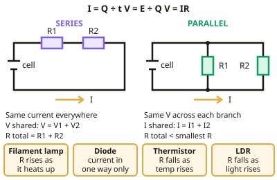

GCSE Physics · Topic 2
Electricity
Electricity powers almost everything in modern life, so this topic covers how circuits work and how electricity reaches our homes.
We will look at current, potential difference and resistance, series and parallel circuits, and the I–V characteristics of different components.
Then we cover sensors, charge and energy, mains electricity and safety, and how the National Grid transmits power across the country.
- 7 subtopics
- 462 questions
- Free: 2.1 notes and 10 questions
In this topic
- 2.1Circuits, current and resistanceFree below · 69 questions
- 2.2Mains electricity and powerOpen in Full Marks · 65 questions
- 2.3Required practical: resistance of a wire and of series and parallel circuitsOpen in Full Marks · 72 questions
- 2.4Required practical: I–V characteristics of a resistor, filament lamp and diodeOpen in Full Marks · 73 questions
- 2.5Thermistors, LDRs and sensing circuitsOpen in Full Marks · 58 questions
- 2.6Charge, potential difference and energy transferred (Q = It, E = QV)Open in Full Marks · 62 questions
- 2.7The National Grid and electricity transmissionOpen in Full Marks · 63 questions
2.1 · Free notes
Circuits, current and resistance

Key points
- Current is the rate of flow of charge: I = Q ÷ t, measured in amperes. Potential difference is energy transferred per unit charge: V = E ÷ Q.
- Ohm's law: V = IR. For an ohmic conductor at constant temperature, current is directly proportional to potential difference.
- In a series circuit, current is the same everywhere, potential difference is shared, and total resistance is the sum of the resistances.
- In a parallel circuit, potential difference is the same across each branch, current is shared, and total resistance is less than the smallest individual resistance.
- The resistance of a filament lamp increases as it heats; a diode only allows current in one direction; a thermistor's resistance falls as temperature rises; an LDR's resistance falls as light intensity rises.
In more detail
- Worked Ohm's law: a 6.0 V supply across a 12 Ω resistor gives I = V ÷ R = 6.0 ÷ 12 = 0.50 A.
- Series example: 4 Ω and 6 Ω in series → R total = 10 Ω; with 5.0 V, I = 0.50 A, and the pds are 2.0 V and 3.0 V.
- Parallel example: two 6 Ω resistors in parallel have a total resistance of 3 Ω, less than either one, because there are more paths for current.
- Ammeters and voltmeters: ammeters go in series and have very low resistance; voltmeters go in parallel and have very high resistance.
Practice
Circuits, current and resistance: 10 questions
Pick an answer to check it, or open the answer for the explanation.
1. A 12 V supply drives 3 A through a component. What is its resistance?
- 0.25 Ω
- 4 Ω
- 15 Ω
- 36 Ω
Show answer
B: 4 Ω. R = V ÷ I = 12 ÷ 3 = 4 Ω.
2. In a series circuit, the current is:
- Different in each component
- The same at every point
- Always zero
- Largest near the cell
Show answer
B: The same at every point. There is only one path for the charge to flow along.
3. What happens to a thermistor's resistance as temperature increases?
- It increases
- It decreases
- It stays the same
- It becomes infinite
Show answer
B: It decreases. Thermistors are used in temperature sensing circuits.
4. Two 6 Ω resistors are connected in series. What is the total resistance?
- 3 Ω
- 6 Ω
- 12 Ω
- 36 Ω
Show answer
C: 12 Ω. In series, resistances add: 6 + 6 = 12 Ω.
5. What does a diode do in a circuit?
- Stores charge
- Allows current in one direction only
- Increases voltage
- Reduces current to zero always
Show answer
B: Allows current in one direction only. Diodes have a very high resistance in the reverse direction.
6. Two 4 Ω resistors are connected in parallel. What is the total resistance?
- 1 Ω
- 2 Ω
- 4 Ω
- 8 Ω
Show answer
B: 2 Ω. 1/R = 1/4 + 1/4 = 1/2, so R = 2 Ω.
7. A current of 4 A flows through a lamp for 30 s. How much charge passes through the lamp?
- 0.13 C
- 34 C
- 7.5 C
- 120 C
Show answer
D: 120 C. Q = It = 4 A × 30 s = 120 C. Dividing current by time (7.5) is a common slip; charge is the product of current and time.
8. A component transfers 150 J of energy while 25 C of charge passes through it. What is the potential difference across it?
- 0.17 V
- 175 V
- 3750 V
- 6 V
Show answer
D: 6 V. V = E ÷ Q = 150 J ÷ 25 C = 6 V. Multiplying the values gives 3750, which is wrong because potential difference is energy per unit charge.
9. A 20 Ω resistor carries a current of 0.5 A. What is the potential difference across it?
- 40 V
- 20.5 V
- 10 V
- 0.025 V
Show answer
C: 10 V. V = IR = 0.5 A × 20 Ω = 10 V. Dividing 20 by 0.5 gives 40, which uses the wrong rearrangement.
10. How should an ammeter be connected to measure the current through a component?
- Across the cell only
- In series with the component
- Either way, as it makes no difference
- In parallel with the component
Show answer
B: In series with the component. An ammeter measures the current flowing through a component, so it must be in series. A voltmeter is the one connected in parallel.
Keep going in Full Marks
Full Marks has 69 questions on Circuits, current and resistance (59 more than here), set out in practice levels. You also get notes and 3D models for all 7 subtopics of Electricity, plus games, timed exams and past papers.
On your exam board
- AQATopic 2: Electricity
- OCR ATopic P3: Electricity and magnetism, Topic P6: Global challenges
- OCR BTopic P2: Sustainable energy, Topic P3: Electric circuits
- EdexcelTopic 10: Electricity and circuits, Topic 13: Electromagnetic induction
- CambridgeTopic 4.2: Electrical quantities, Topic 4.3: Electric circuits, Topic 4.4: Electrical safety, Topic 4.5: Electromagnetic effects